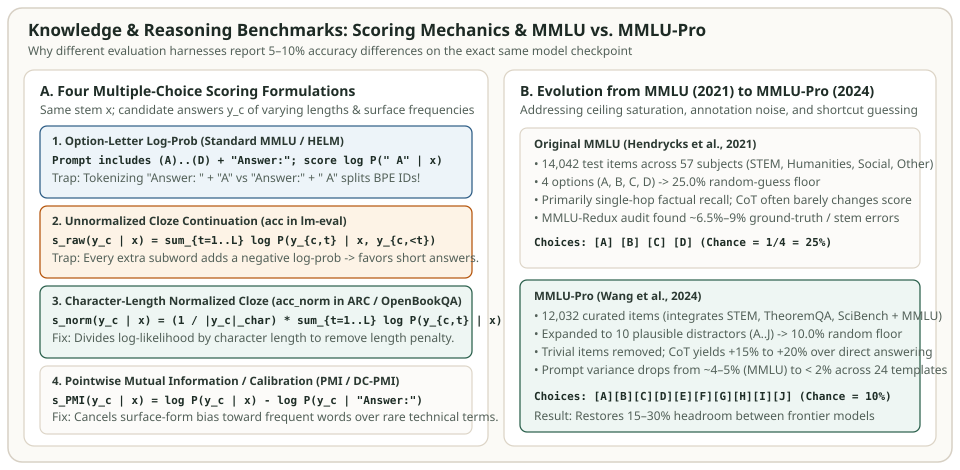

World Knowledge & Multi-Task Benchmarks: MMLU, MMLU-Pro, ARC-Challenge, OpenBookQA & TriviaQA
Why did the exact same pretrained LLM checkpoint score $64.2\%$ on 5-shot MMLU in one technical report and $57.8\%$ in another? Neither team fabricated numbers: one harness formatted options inside the prompt and compared single-token log-probabilities $\ln P_\theta(\text{" A"} \mid x)$ over the four letters $\{A, B, C, D\}$, while the other scored the unnormalized multi-token cloze continuation of the answer text itself. Across knowledge and science benchmarks—MMLU, MMLU-Pro, ARC (Easy & Challenge), OpenBookQA, and TriviaQA—small changes in prompt structure, BPE leading-space boundary alignment, and length or prior normalization routinely shift accuracy by $5\text{–}10$ percentage points.
This chapter dissects the task design of each major knowledge benchmark, derives the four multiple-choice scoring equations (Single-Letter Log-Prob, Unnormalized Cloze, Character-Length Normalized Cloze acc_norm, and Pointwise Mutual Information $\operatorname{PMI}$), explains why MMLU-Redux and MMLU-Pro were created to fix MMLU's noise and ceiling saturation, and traces a worked numerical example in Python.


The Four Multiple-Choice Scoring Formulations
Consider a multiple-choice question with stem $q$ and $K$ candidate answer texts $\{y_1, \dots, y_K\}$ associated with option labels $\mathcal{L} = \{\text{A}, \text{B}, \dots\}$. Harnesses evaluate models on this item in four distinct ways:
1. Explicit Option-Letter Log-Probability (Standard 5-Shot MMLU)
In Hendrycks et al.'s original MMLU formulation (and `lm-eval`'s default `mmlu` task), the prompt $x$ includes the question stem and all $K=4$ labeled choices (`A. ... \nB. ... \nC. ... \nD. ...\nAnswer:`), preceded by $5$ solved in-context examples from the same subject's `dev` split. The model runs a single forward pass on $x$, extracts the next-token logits at the final position, and restricts argmax selection to the four option-letter token IDs:
The BPE Leading-Space Trap: In SentencePiece and GPT/TikToken BPE vocabularies, `"A"` (token ID after a newline or start-of-string) and `" A"` (token ID with a leading space `ĠA` or `▁A`) are completely different vocabulary indices! If the prompt string ends with `"Answer:"` (no trailing space), the model places almost all probability mass on `" A"` (with leading space). If a buggy script ends the prompt with `"Answer: "` (trailing space) and still queries the token ID for `" A"`, it queries the probability of a double space `" A"`, causing accuracy to collapse toward the $25\%$ random baseline.
2. Unnormalized Cloze Continuation (`acc`)
In benchmarks like ARC and OpenBookQA, classic cloze evaluation omits the option list from the prompt $x$ (e.g., $x = \text{"Question: ... \nAnswer:"}$) and runs $K$ separate forward passes to score the conditional log-likelihood of each candidate answer string $y_c = (y_{c,1}, \dots, y_{c,L_c})$:
Because every conditional probability satisfies $P_\theta(y_{c,t} \mid \cdot) \in (0, 1)$, every term $\ln P_\theta(y_{c,t} \mid \cdot)$ is strictly negative. A detailed 12-token scientific explanation accumulates $12$ negative log-probabilities, whereas a 2-token distractor accumulates only $2$—systematically biasing $s_{\text{raw}}$ toward the shortest option.
3. Character-Length or Byte-Length Normalized Cloze (`acc_norm`)
To remove the length penalty without introducing tokenizer-vocabulary bias, EleutherAI's `lm-evaluation-harness` defines `acc_norm` by dividing the total conditional log-likelihood of $y_c$ by its character count $|y_c|_{\text{char}}$ (equivalently UTF-8 byte length for ASCII):
Notice why dividing by $|y_c|_{\text{char}}$ is preferred over dividing by subword token count $L_c$: if a distractor contains a rare hyphenated word that splits into many short subwords, dividing by $L_c$ over-rewards that fragmentation, whereas $|y_c|_{\text{char}}$ measures physical string length.
4. Pointwise Mutual Information / Domain Conditional Likelihood ($\operatorname{PMI}$)
As Holtzman et al. (2021) dubbed Surface Form Competition, some candidate answers have a much higher unconditional prior probability than others (for instance, `"water"` is orders of magnitude more frequent in web text than `"osmosis"`). PMI calibration (used in GPT-3 on ARC and OpenBookQA) measures how much more likely $y_c$ becomes when conditioned on the question $x$ compared to a domain-neutral null prompt $x_{\text{null}} = \text{"Answer:"}$:
Worked Numerical Puzzle: One Question, Three Different Winners
Consider a biology question $x$ where Option A (`"water"`, $5\text{ chars}$) is a common distractor, Option B (`"osmosis"`, $7\text{ chars}$) is a shorter technical distractor, and Option C (`"semi-permeable membrane transport"`, $33\text{ chars}$) is the true answer:
| Candidate Answer $y_c$ | Chars $|y_c|$ | Conditional $\ln P(y_c \mid x)$ | Unconditional $\ln P(y_c \mid x_{\text{null}})$ | Raw $s_{\text{raw}}$ | Char-Norm $s_{\text{norm}}$ | Calibrated $s_{\text{PMI}}$ |
|---|---|---|---|---|---|---|
A: "water" (Common distractor) |
5 | $-2.50$ | $-2.70$ | $-2.50$ (Winner) | $-0.5000$ | $+0.20$ |
B: "osmosis" (Rare term, high lift) |
7 | $-3.60$ | $-7.80$ | $-3.60$ | $-0.5143$ | $+4.20$ (Winner) |
C: "semi-permeable membrane transport" |
33 | $-13.20$ | $-16.50$ | $-13.20$ | $-0.4000$ (Winner) | $+3.30$ |
- Unnormalized $s_{\text{raw}}$ picks A (`"water"`, $-2.50$): Because `"water"` is short and globally common, its raw sum beats both longer/rarer candidates.
- Character-normalized $s_{\text{norm}}$ picks C (`"semi-permeable membrane transport"`, $-0.4000\text{ nats/char}$): Dividing $-13.20 / 33 = -0.4000$ reveals that the model was highest-confidence per character on the full 33-character phrase.
- PMI-calibrated $s_{\text{PMI}}$ picks B (`"osmosis"`, $+4.20\text{ nats}$): Subtracting the rare unconditional prior $\ln P(\text{"osmosis"} \mid x_{\text{null}}) = -7.80$ shows that the question stem boosted the probability of `"osmosis"` by $e^{4.20} \approx 66.7\times$, compared to only $e^{0.20} \approx 1.22\times$ for `"water"`.
Survey of Knowledge & Factuality Benchmarks
| Benchmark | Test Size & Format | Standard Protocol | Design Goal & Known Limitations |
|---|---|---|---|
| MMLU (Hendrycks et al., 2021) | 14,042 items across 57 subjects; 4 choices (A–D) | 5-shot letter log-prob (base) or 0/5-shot CoT (instruct) | Tests breadth from Elementary Math to Professional Law; saturates near ~88–90% due to ~6.5–9% label noise. |
| MMLU-Redux (Gema et al., 2024) | 3,000 manually re-annotated items across 30 MMLU subjects | 5-shot letter log-prob or CoT | Audits MMLU error taxonomy (bad ground truth, multiple valid answers, missing context in Virology/Law). |
| MMLU-Pro (Wang et al., 2024) | 12,032 items across 14 domains; 10 choices (A–J) | 5-shot Chain-of-Thought (CoT) | Drops random floor from 25% to 10%, removes trivial recall items, and requires multi-step STEM/legal reasoning. |
| ARC-Easy & ARC-Challenge (Clark et al., 2018) | 5,197 Easy + 2,590 Challenge grade 3–9 science questions | 0-shot or 25-shot acc_norm / letter log-prob |
ARC-Challenge specifically filters for questions that both retrieval and word-co-occurrence baselines failed. |
| OpenBookQA (Mihaylov et al., 2018) | 500 test questions modeled on open-book elementary science exams | acc_norm or PMI-calibrated log-prob |
Requires combining a core scientific fact ("metals conduct heat") with everyday world knowledge. |
| TriviaQA & NaturalQuestions (Closed-Book) | 11,313 (TriviaQA wiki dev) / 3,610 (NQ-Open test) short-answer pairs | Few-shot greedy generation: Normalized Exact Match (EM) & $F_1$ | Tests parametric factual recall without distractors; sensitive to alias lists ("US" vs "United States"). |
Closed-Book Generative QA: SQuAD/TriviaQA String Normalization
Unlike multiple-choice benchmarks, closed-book TriviaQA and NaturalQuestions (NQ-Open) require the model to generate a short free-text span $\hat{a}$, which is compared against a set of acceptable gold aliases $\mathcal{A}^* = \{a_1^*, \dots, a_m^*\}$. Standard evaluation first applies a canonical normalizer $\nu(\cdot)$ that lowercases text, strips ASCII punctuation, removes English articles (`a`, `an`, `the`), and collapses whitespace, then computes Exact Match (EM) and bag-of-words Token $F_1$:
Runnable Python Verification: Multiple-Choice Scoring & TriviaQA Normalization
The script below verifies all three cloze scoring modes ($s_{\text{raw}}$, $s_{\text{norm}}$, $s_{\text{PMI}}$) on our biology puzzle and implements the official TriviaQA / SQuAD string normalizer and token-$F_1$ scorer:
import re
import string
from collections import Counter
# 1. Verify Multiple-Choice Scoring Formulations (Raw vs Char-Norm vs PMI)
candidates = {
"A": {"text": "water", "cond_logp": -2.50, "uncond_logp": -2.70},
"B": {"text": "osmosis", "cond_logp": -3.60, "uncond_logp": -7.80},
"C": {"text": "semi-permeable membrane transport", "cond_logp": -13.20, "uncond_logp": -16.50},
}
w_raw = max(candidates, key=lambda k: candidates[k]["cond_logp"])
w_norm = max(candidates, key=lambda k: candidates[k]["cond_logp"] / len(candidates[k]["text"]))
w_pmi = max(candidates, key=lambda k: candidates[k]["cond_logp"] - candidates[k]["uncond_logp"])
assert (w_raw, w_norm, w_pmi) == ("A", "C", "B")
# 2. Verify Closed-Book QA Normalization (TriviaQA / NQ-Open)
def normalize_answer(s: str) -> str:
s = s.lower()
s = "".join(ch for ch in s if ch not in string.punctuation)
s = re.sub(r"\b(a|an|the)\b", " ", s)
return " ".join(s.split())
def qa_em_and_f1(prediction: str, gold_aliases: list[str]) -> tuple[int, float]:
pred_norm = normalize_answer(prediction)
pred_toks = pred_norm.split()
best_em, best_f1 = 0, 0.0
for gold in gold_aliases:
gold_norm = normalize_answer(gold)
best_em = max(best_em, int(pred_norm == gold_norm))
gold_toks = gold_norm.split()
common = Counter(pred_toks) & Counter(gold_toks)
num_same = sum(common.values())
if num_same > 0:
f1 = (2.0 * num_same) / (len(pred_toks) + len(gold_toks))
best_f1 = max(best_f1, f1)
return best_em, round(best_f1, 4)
em1, f1_1 = qa_em_and_f1("The Apollo 11!", ["Apollo 11", "Apollo XI"])
em2, f1_2 = qa_em_and_f1("Apollo 11 mission", ["Apollo 11"])
assert (em1, f1_1) == (1, 1.0)
assert (em2, f1_2) == (0, 0.8)
print(f"Winners -> Raw: {w_raw}, Char-Norm: {w_norm}, PMI: {w_pmi}")
print(f"TriviaQA -> Exact alias: EM={em1}, F1={f1_1} | Partial span: EM={em2}, F1={f1_2}")References & Primary Sources
- Hendrycks et al. (2021), Measuring Massive Multitask Language Understanding (MMLU), ICLR 2021.
- Wang et al. (2024), MMLU-Pro: A More Robust and Challenging Multi-Task Language Understanding Benchmark, NeurIPS 2024.
- Gema et al. (2024), Are We Done with MMLU? (MMLU-Redux).
- Clark et al. (2018), Think you have Solved Question Answering? Try ARC, the AI2 Reasoning Challenge.
- Holtzman et al. (2021), Surface Form Competition: Why the Highest Probability Answer Isn't Always Right, EMNLP 2021.